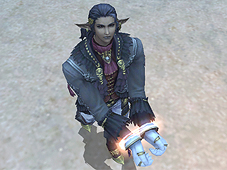
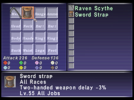
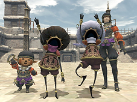
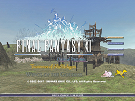

[Event-Related]

The final chapter in the Treasures of Aht Urhgan missions has been added.
The following adjustments have been made to the chocobo raising and chocobo racing systems:
- The Chocobo Circuit has opened!
Related Information>>
- The Chocobo Circuit can be entered from Southern San d’Oria, Bastok Mines, Windurst Woods, Port Jeuno, and Aht Urhgan Whitegate.
- New items are available at the VCS Chocobuck Exchange Depots.
- The maximum number of chocobucks a player can carry has been increased from 100 to 1000.
The following adjustments have been made to the Chocobo Hot and Cold Game:
- New temporary abilities are now gained when fulfilling certain conditions.
"Temporary Treasure Finder"
It is now possible for chocobos to temporarily gain the Treasure Finder ability. Chocobos that already have "Treasure Finder" will have the effect of the ability temporarily doubled.
"Recuperation"
A bonus will be granted to rested chocobos that improves their chances to "hit the jackpot" and also increases the number of times they can dig.
- Treasure chests found during the Chocobo Hot and Cold Game will now also contain “chocobuck slips” that can be exchanged for chocobucks. Trade your chocobuck slips to the VCS Chocobuck Exchange Depot NPC.
- A chocobo’s ability to sense treasure will now also be limited by the relative vertical distance as well as the horizontal distance from a treasure chest, i.e. standing on a hill high above a treasure chest location.
The following adjustments have been made to Besieged:
- If the beastmen forces are not defeated by the Empire or capture the Astral Candesence, they will now automatically retreat one Earth hour after their arrival in Al Zahbi.
- Additional temporary items will now be distributed to players every time a certain number of beastmen and monsters have been defeated.
- The offensive and defensive capabilities of the Serpent Generals have been enhanced.
- The damage caused by monsters using the ninja ability “Mijin Gakure” has been adjusted.
Players now have the opportunity to attain the new mercenary rank of First Lieutenant and gain access to new items purchasable with Imperial Standing credits.
New quests have been introduced in the Treasures of Aht Urhgan areas.
The difficulty of the following limit break quests has been adjusted:
- In Defiant Challenge
Drop rates for the quest items ancient papyrus and exoray mold have been improved.
- Atop the Highest Mountains
The relative strength of the quest monsters (Boreal Hound, Boreal Coeurl, and Boreal Tiger) has been reduced so that a party of six level 51 characters will be able to defeat them.
*The quest monsters mentioned above will use the ability “Doom” if the battle continues for more than thirty minutes.
Players will now be able to access their Mog Lockers at nomad moogles after selecting the option to increase Mog Locker availability.
The fee for creating the item in the following quests has been reduced from 20,000 gil to 10,000 gil. In addition, the fee for re-obtaining the item has been reduced from 300,000 gil to 100,000 gil
- An Understanding Overlord?
- An Affable Adamantking?
- A Moral Manifest?
- A Generous General?
The location of the Imperial Army officer Asrahd in Aht Urhgan Whitegate has been switched with the event replay NPCs Prillaure and Tsih Kolgimih.
The locations of the archaic mirrors on Arrapago Reef have been adjusted.
Players will now receive a title after defeating the following Salvage monsters:
Battleclad Chariot/Armored Chariot/Long-Bowed Chariot/Long-Armed Chariot
[Battle-Related]
The following adjustments have been made to Assault:
- Five new missions are now available for players with the rank of First Lieutenant.
- Players who have completed every Assault mission (i.e. the missions appear on the “Complete” list) will be rewarded with an extra Imperial Army I.D. tag to be held in reserve for them at the Commissions Agency.
The following adjustments have been made to Einherjar:
- The HP of all monsters in the Hazhalm Testing Grounds has been reduced.
- An issue with the monster “Hildesvini” not correctly summoning chigoes has been addressed.
In exchange for the loss of data after clearing Floor 100 during the Assault mission “Nyzul Isle Investigation”, the chance for obtaining the armor pieces has been increased to 100%.
The party that defeats the monster required to cause “Despot” to appear will now automatically claim the NM.
The following adjustments have been made to Goblin Bounty Hunters:
- Goblin Bounty Hunters will now appear in the Sauromogue Champaign and the Korroloka Tunnel in locations where it is possible to fish.
- The patrol route of Goblin Bounty Hunters in the Valkurm Dunes has been altered.
The following adjustments have been made to two-handed weapons:
- Two-handed weapons will now receive larger benefits from a character’s attributes, and will also inflict more damage when facing higher-level opponents or enemies with high defense.

- A new type of equipment known as “grips” can now be equipped in the sub-weapon slot while using a two-handed weapon.
*Grips cannot be used without a two-handed weapon equipped in the main weapon slot.
**TP will be reset when changing or removing grips, in the same manner as for main weapon equipment changes.
The following weapon skills have been adjusted:
Howling Fist/Dragon Kick/Raging Rush/Cross Reaper/Penta Thrust/Skewer/ Yukikaze/Gekko/Kasha/Empyreal Arrow/Detonator
Several weapon skills have had the effects of TP adjusted in the following manner:
- Raging Rush
Damage varies with TP >> Chance of critical hit varies with TP
- Penta Thrust
Damage varies with TP >> Accuracy varies with TP
- Skewer
Accuracy varies with TP >> Chance of critical hit varies with TP
The chance for the additional stun effect of the abilities “Shield Bash” and “Weapon Bash” to occur has been greatly increased.
In addition to this change, the help text for the following pieces of equipment has been changed to “Bash”+(number) to reflect an increase in “Bash“ damage.
Chaos Gauntlets/Knightly Earring/Chaos Gauntlets +1/Valor Gauntlets +1/ Valor Gauntlets/Sigma Earring/Crude Sword
The following adjustments have been made to the beastmaster job:
- Pets summoned with the “Call Beast” ability will now remain for a longer period of time.
*Duration varies for each type of pet.
- Pets not in combat will now gradually regain HP.
It is possible for a beastmaster to increase the rate at which a pet regains HP by using the “Stay” command.
- Beastmasters will no longer be subject to an experience point penalty while using a charmed monster.
The job ability “Convergence” will now only affect “magical” blue magic spells.
The effect of “Convergence” will also no longer lose potency against high-level opponents.
Another level of the dragoon job trait “Accuracy Bonus” has been added.
The following adjustments have been made to the corsair job:
- The effect of “Phantom Roll” has been greatly increased.
- The length of time a character remains immobile while using the “Phantom Roll” ability has been reduced.
- The job ability “Fold” will now always remove the “Bust” penalty first.

The following adjustments have been made to the puppetmaster job:
- Two new varieties of automaton heads have been added.
"Soulsoother C-1000 Head (White Magic)"
The automaton will perform actions such as restoring HP and removing status ailments for its master, as well as other party members, in response to the situation and the maneuvers used.
"Spiritreaver M-400 head (Black Magic)"
The automaton will utilize high-level elemental spells, as well as dark magic spells such as Drain and Aspir.
The maximum limit for the automaton melee skill, ranged skill, and magic skill has been increased. In accordance with this change, the skill limit will now be calculated depending on the combination of an automaton’s frame and head.
*The skill limit will never drop below the current maximum value regardless of the frame and head combination.
[Item-Related]
New equipment has been introduced.
New synthesis recipes have been added.
The following special items can now be stored with the relevant NPC:
Sprig of Red Bamboo Grass/Sprig of Blue Bamboo Grass/Sprig of Green Bamboo Grass
The following items can now be stored with the NPC Ghanraam in Aht Urhgan Whitegate:
Vorpal Sword/Wightslayer/Brave Blade/Double Axe/Swordbreaker/Dancing Dagger/Radiant Lance/Sasuke Katana/Windslicer/Sturdy Axe/Mage's Staff/Scepter Staff/Killer Bow/Quicksilver/Burning Fists/Inferno Claws/Werebuster/Death Sickle
New goods have been added to the shops in Nashmau.
Large quantities of steel bullets can now be bundled into bullet pouches.
The sub-category “Grips” has been added to the Auction House category “Ammo & Misc.”
The attributes for corsair bullets have been changed.
The additional effects granted by attachments will now be displayed within the item help text.
A change has been made to the types of items obtainable after appraising the “??? Box” (found during Assault missions).
The icon for beastmen's seals has been changed.
The drop rate for the following items has been adjusted:
Leech Saliva/Antican Acid/Lizard Blood/Bird Blood/Beast Blood/ Loam
The following item name has changed:
Mercenary's Mantle >> Mercenary Mantle
[System-Related]
The following changes have been made to the FINAL FANTASY XI title screen:

- The FINAL FANTASY 20th Anniversary and FINAL FANTASY XI 5th Anniversary logos have been added.
- Logos will appear translucent if the respective expansion pack has not been installed.
- Extra scenes have been added to the title screen:
"FINAL FANTASY XI"
Fort Ghelsba
"Chains of Promathia"
Al'Taieu
"Treasures of Aht Urhgan"
Mount Zhayolm
A new text command “/translate” has been introduced.
Using this text command, players will be able to see the translations for item names in Japanese, English, French, and German. Translated terms will be automatically added to the auto-translate dictionary under the category “Items”.
The “/translate” command is used in the following manner:
Example: Fire Crystal
English to Japanese: /translate “Fire Crystal” ej
English to French: /translate “Fire Crystal” ef
English to German: /translate “Fire Crystal” eg
*This text command currently functions for item names only.
**It is also possible to translate from another language into English, provided the term is spelled correctly.
Example: French to English: /translate “cristal de feu” fe
***The term to be translated can be marked with either single or double quotation marks.
Mithra and Galka will now close their eyes while in the healing position.
An issue wherein the screen would turn black and prevent the player from taking actions during event scenes in Aht Urhgan Whitegate has been addressed.
An issue concerning an incorrect number of victories in the defense of the capital being displayed on the Caitsith World has been corrected.
New terms have been added to the auto-translate dictionary.
| Category | Term |
| Game Terms | FP |
| Game Terms | Grip |
| Game Terms | Feral Skill |
| Game Terms | Kamp Kweh |
| Game Terms | Pankration |
| Game Terms | Feral Drain |
| Titles | Captain |
| Titles | First Lieutenant |
| Text Commands | /translate |
| Place Names 2 | Colosseum |
| Place Names 2 | Chocobo Circuit |
The grand opening of the Pit has been delayed to allow for further testing, and is currently scheduled for release on September 11.
Further details on the Pit and the monster battle system known as “Pankration” will be available in the very near future.